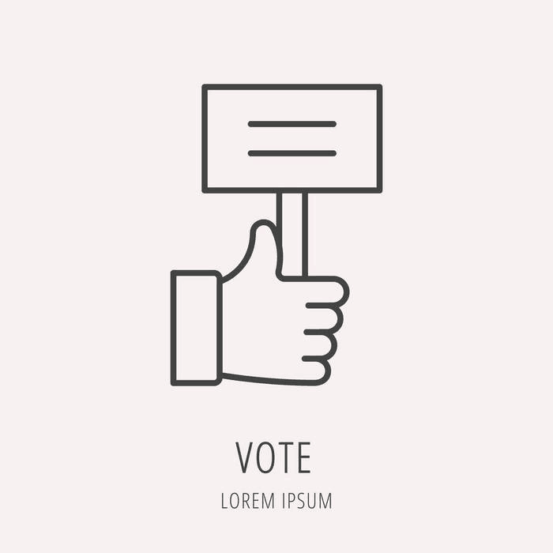

区块链投票系统
华东师范大学
项目介绍
项目内容
本项目搭建一个部署于区块链上，功能完善，用户友好的区块链投票系统。在确保投票结果真实可靠、可溯源、不可篡改的情况下，尽可能满足投票发起者和投票站的使用需求，设置可投票数激励机制，对投票结果进行数据分析及可视化。
用户画像
痛点：
投票过程中会出现刷票现象，存在不正当的花钱购买选票，刷票软件刷虚假票等情况，使得票数异常增长，形成恶性竞争。
投票过程不公开不透明，举办方的后台投票数据有被篡改的可能，候选人和公众都无法监督投票过程，投票的公平性难以保证。
收获：
明星投票常常由后援会等民间粉丝组织发起，明星粉丝自发参与。公开公正的投票可以调查明星受欢迎度，同时扩大民间组织的影响力。
选秀投票的投票结果往往用于决定参赛者的排位，从而决定参赛者是否能出道，公开公正的投票可以保证选秀的公平性，避免暗箱操作。
待完成：
监督每一张选票的来源，防止恶意刷票。
利用技术手段保证投票数据公正公开，不被篡改。
用例：
需要一个可以保证公平性、公开性、可信度的在线投票平台，从而规避假票、刷票、暗门操作等情况。
问题定义
如今的主流互联网平台，如微博、b站等，都具备投票功能，然而数据均在平台应用的后台进行操作，并且鲜有基于投票数据提供的服务。投票数据的公开公正、不可篡改是投票公平性的重要一环，但由于这些平台的选票数据都是集中保存在非公开数据库上的，投票公平性的唯一保障是这些平台的公信力。对公信力不够的小平台、小组织，如果需要进行公平的投票，需要利用技术手段来保证投票的内容、过程和结果的透明和不可篡改，并且可供检验以确保真实性。因此需要采用区块链技术使投票数据不可篡改、公开透明。另外，也可以基于投票数据提供数据分析、可视化等服务。
需求总结
功能
实现完整的投票流程，投票的过程和结果可以具体记录，公开透明、可监督。
界面
界面用户友好，便于进行发起投票、参与投票、查看过程和结果等操作。
稳定
具备高稳定性，能够应对大量用户的并发操作。